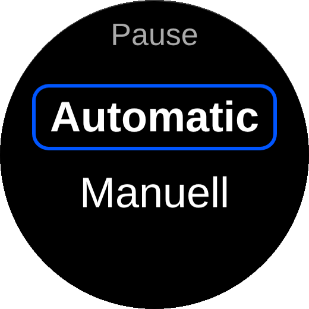
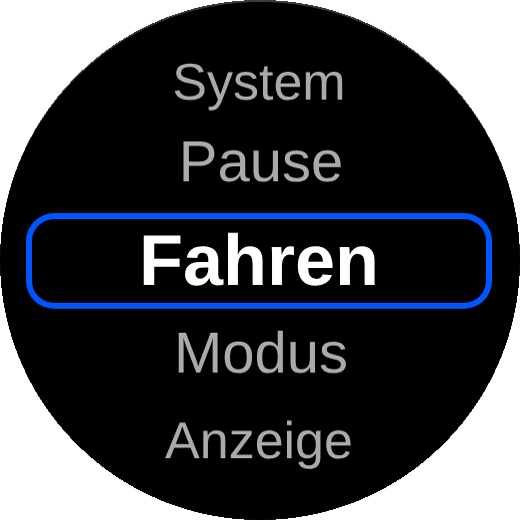
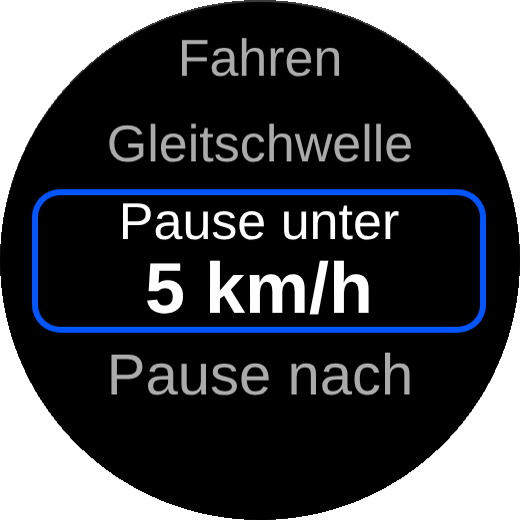
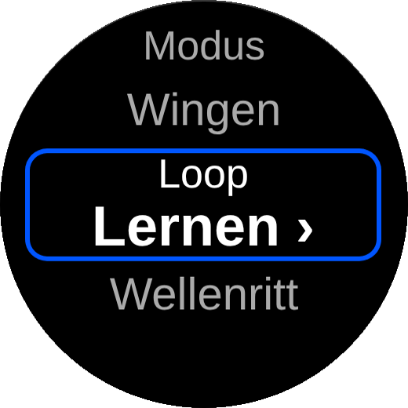
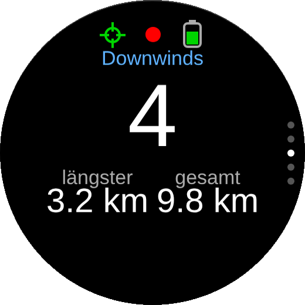
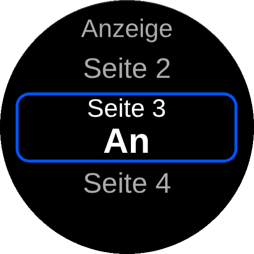
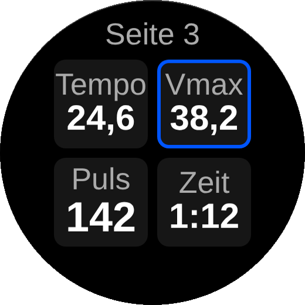
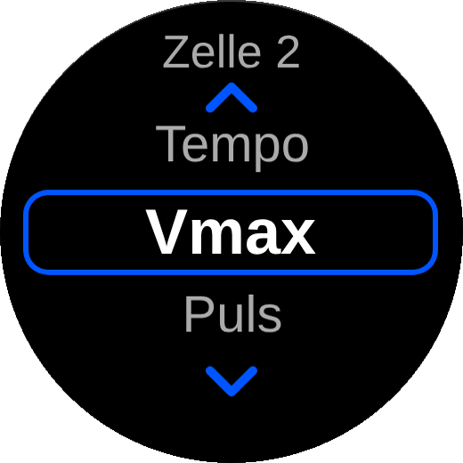
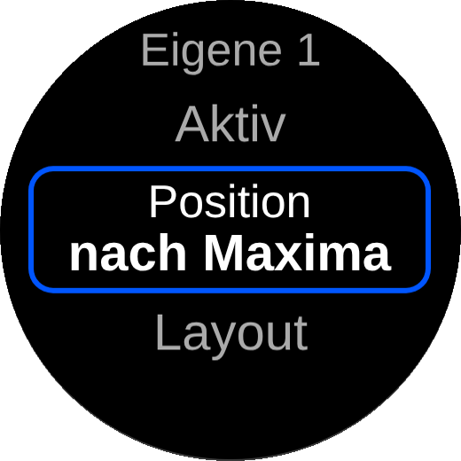
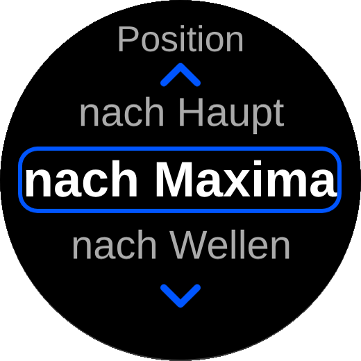

Stand: Version 0.23.0 (Zielzustand). Die Bilder sind aus dem Code nachgebaute Darstellungen, keine echten Uhr-Screenshots. Die Version ist noch nicht gebaut und nicht auf der Uhr getestet. Beispielwerte sind erfunden.
1 Überblick
SurfsApp zeichnet Windsurf- und Wing-Foil-Sessions auf der Garmin fēnix 7 Pro auf. Bedient wird mit HOCH/RUNTER (wählen, blättern) und START (öffnen, bestätigen). Ein blauer Rahmen markiert die Auswahl, blaue Pfeile zeigen, dass es in diese Richtung weitergeht.
2 Startseite und Sportauswahl
1 Startseite (Bereit) Blaue Pfeile oben und unten, Auswahl mit dünnem blauem Rahmen, Nachbarn grau ohne Rahmen.2 Sportauswahl Beide Sportarten stehen immer da, der Rahmen springt. Kein Doppel oben und unten.
Auf der Startseite stehen die beiden Sportarten Windsurfen und Wingen. Der Rahmen springt zwischen ihnen, Nachbarn stehen grau ohne Rahmen daneben.
3 Das Menü
Das Menü öffnet auf „Pause“. Die Einträge sind in Gruppen geordnet:
Pause – Automatic oder Manuell.
Fahren – Fahrt ab, Gleitschwelle, Pause unter, Pause nach (die beiden letzten nur bei Automatic).
Modus – Loop (Untermenü), Wellenritt, Wingen.
Anzeige – Eigene Seiten 1 bis 4.
Letzte Sprünge – nur sichtbar, wenn Loop aktiv ist.
System – Sprache, Connect-Felder, Debug-Protokoll, Version.
3 Menü öffnet auf „Pause“ Wie bisher die Vorauswahl, der Wert steht dabei. Fünf- bzw. dreizeilig, die Zeilen füllen die Höhe, daher ohne Pfeile.

4 Pause: Auto oder Manuell Zwei Werte, beide sichtbar, Rahmen springt. HOCH/RUNTER im Kreis.

5 Menü, „Fahren“ gewählt Einträge ohne Wert: fünf Zeilen, symmetrisch.

6 Gruppe Fahren Fahrt ab, Gleitschwelle, Pause unter, Pause nach.

7 Gruppe Modus Drei Einträge. Das › heißt: öffnet ein Untermenü.8 Untermenü Loop Zwei Einträge, beide zweizeilig sichtbar, Rahmen springt. Bei Stellung „Aus“ nur der erste.9 Wert ändern Zahlenwert mit Nachbarn, blaue Pfeile.
Ein „›“ hinter einem Eintrag bedeutet: START öffnet ein Untermenü. Zahlenwerte werden mit HOCH/RUNTER geändert, die Nachbarwerte stehen darüber und darunter.
4 Seiten während der Aktivität
HOCH/RUNTER blättert durch die Seiten. Die Punkte am rechten Rand zeigen die Position. Die Reihenfolge ist fest: Hauptseite, Maxima, Wellen (Wingen: Downwinds), eigene Seiten, Loop-Seite, Kompass.
Seite 1 · Aufnahme Zeit, Tempo, HF, Strecke, Zonenbogen unten. Roter Punkt = es läuft. Seitenpunkte am rechten Rand.Seite 1 · Pause Oben „AUTO“ (bei manueller Pause das Pausezeichen). Statt Tempo steht Vmax, dazu das Pausezeichen als Umriss.Seite 2 · Maxima Vmax, HF max, beste 2 s, HF Ø; darunter Halsen, 10 s, Gleiten.Seite 3 · Wellen (Windsurfen) Letzter Ritt, Bottom Turn, Cutback, letzter Cutback.

Seite 3 · Downwinds (Wingen) Beim Wingen ersetzt diese Seite die Wellen-Seite.Seite 4 · vier Zellen Zelle 1 bis 4, frei belegbar (Beispielwerte).Seite 5 · optional Zelle 5 bis 8 gleich aufgebaut. Mit Seite 5 sind es sechs Punkte.Loop-Seite Nur bei Windsurfen mit Loop-Lernphase, vor dem Kompass. Zahl der Loops, Rauschen, Schwelle, letzter Sprung, G max.Letzte Seite · Kompass Vollbild ohne Kopfzeile und Seitenpunkte. Oben die Blickrichtung, blauer Pfeil = Wind, N rot.
5 Eigene Seiten und Layouts
Unter Anzeige lassen sich bis zu vier eigene Seiten einrichten. Je Seite gibt es Aktiv (An/Aus), Layout, Position und Belegung.

10 Anzeige: Seiten 1 bis 4 Jede Seite An/Aus, START öffnet die Seite.11 Seite 3 Drei Einträge: Aktiv, Layout, Belegung.12 Layout wählen Das Bild der Seite statt einer Zahl. HOCH/RUNTER blättert durch die Layouts.
Die sechs Layouts
Layout 1: 1 Zelle Eine große Zelle, Beschriftung SMALL.Layout 2: 2 Zellen Zwei Zeilen übereinander.Layout 3: 3 Zellen Eine breite Zelle oben, zwei darunter.Layout 4: 4 Zellen Raster 2 × 2.Layout 5: 5 Zellen 2 + 1 + 2, die Mitte breit. Zellen zu klein für SMALL: nur Wert, Beschriftung entfällt.Layout 6: 6 Zellen 1 + 2 + 2 + 1. Nur Werte, Beschriftung entfällt.
Belegung
Zuerst die Zelle wählen, dann das Datenfeld. Die Feldliste im Bild ist ein Beispiel, nicht die echte Liste.

Belegung: Zelle wählen Die Seite selbst als Auswahl: Rahmen springt von Zelle zu Zelle, im Kreis. START öffnet die Datenfeldliste.

Belegung: Datenfeld wählen Beispieltexte, nicht die echte Feldliste.
Position
Jede eigene Seite steht hinter einer festen Seite: Hauptseite, Maxima oder Wellen. Mehrere an derselben Stelle stehen in der Reihenfolge Eigene 1 bis 4.

4 Eigene Seite: Position Pro eigener Seite ein Eintrag „Position“: hinter welche feste Seite sie kommt. Die festen Seiten bleiben unverändert.

5 Position wählen Hinter Haupt, Maxima oder Wellen. Mehrere eigene Seiten an derselben Stelle stehen in der Reihenfolge Eigene 1 bis 4.6 Eigene Seite, live Hier Layout 3 zwischen Maxima und Wellen. Der Seitenpunkt ist für eigene Seiten blau, die aktuelle Seite weiß.
6 Loops
Ein Loop zählt, wenn die Nettodrehung in einem gleitenden 2-Sekunden-Fenster mindestens 240° erreicht und die Drehrate mindestens 0,6 s am Stück über 200 °/s liegt (Beschluss Andi, 13.11.). Die Flugphase ist kein Kriterium. Gespeichert werden nur Loops. Die Loop-Seite zeigt Anzahl, Rauschen, Schwelle, letzten Sprung und G max.
7 Summe
Die Summe über alle gespeicherten Sessions (Sessions, Fahrzeit, Strecke, Loops beim Windsurfen) steht am Ende der Vorschau, nach dem Kompass. Auf der Startseite gibt es keinen Eintrag „Summe“. Bilder dazu fehlen, weil der Nachbau noch Überlappungen hat. Die Seite zeigt nur die aktuelle Sportart, ein Umschalter ist noch offen.
8 Offen
Bei Layout 5 und 6 entfallen die Beschriftungen, das muss noch auf Lesbarkeit besprochen werden.
Echte Screenshots aus dem Simulator ersetzen die Nachbauten, sobald 0.23.0 läuft.